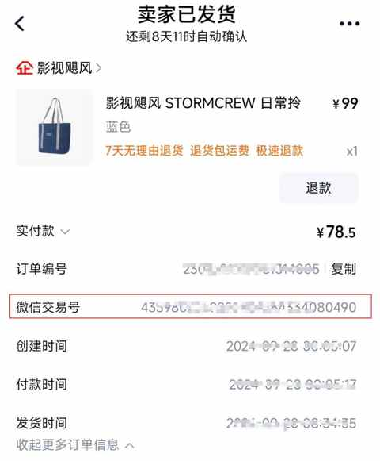
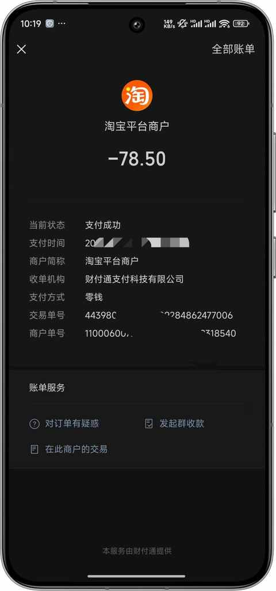
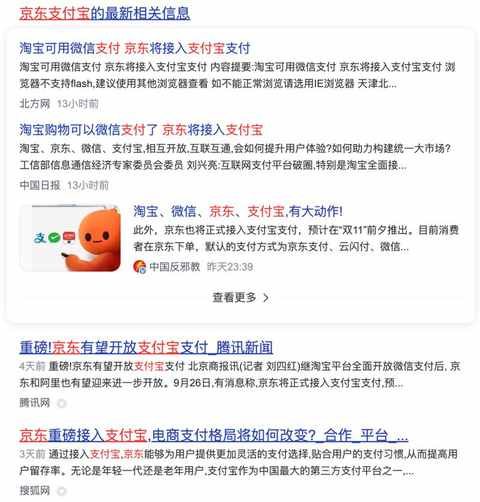

淘宝的一个史诗级的更新：可使用微信支付！！！
约斯特普通
2024-09-29
近期的一个重磅新闻，淘宝居然支持微信支付啦！！！

前天晚上在淘宝下单成功，支付流程很顺畅。
不过和使用支付宝不同的是，使用微信支付的时候会唤起微信，然后就是和日常使用微信支付一样的界面，成功之后就会跳转回淘宝。


不过，现在并不是所有商品都支持微信支付，实测下来支持的商品比例不是很高，后续支持的商品肯定会越来越多。
既然淘宝都支持微信支付了，接下来比较重磅的就是： 京东再次支持支付宝。

电商互联互通的速度比想象中更快，希望接下来各大平台也都加快各类信息互联互动的进度，不止于支付环节。
实在是受够了各种火星文的复制粘贴、想在京东买东西但钱在支付宝、在淘宝买东西钱在微信支付等情况，虽然解决起来就是多几个步骤，但实在是太糟心，严重影响心情。